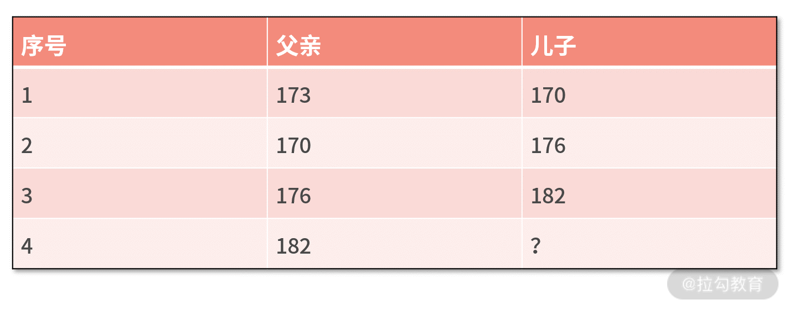
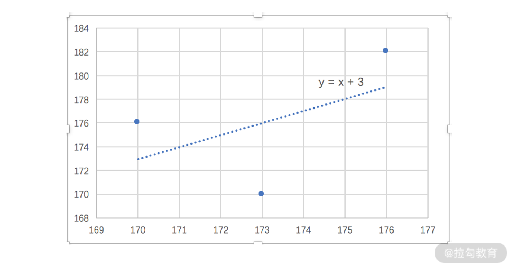
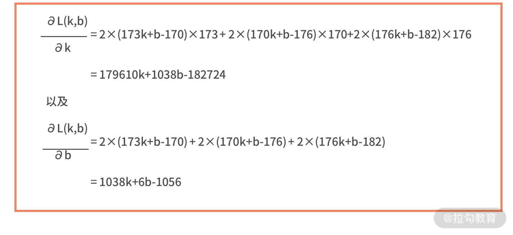

- 00 开篇词 数学，编程能力的营养根基.md.html
- 01 从计数开始，程序员必知必会的数制转换法.md.html
- 02 逻辑与沟通，怎样才能讲出有逻辑的话？.md.html
- 03 用数学决策，如何规划好投入、转化和产出？.md.html
- 04 万物可数学，经典公式是如何在生活中应用的？.md.html
- 05 求极值：如何找到复杂业务的最优解？.md.html
- 06 向量及其导数：计算机如何完成对海量高维度数据计算？.md.html
- 07 线性回归：如何在离散点中寻找数据规律？.md.html
- 08 加乘法则：如何计算复杂事件发生的概率？.md.html
- 09 似然估计：如何利用 MLE 对参数进行估计？.md.html
- 10 信息熵：事件的不确定性如何计算？.md.html
- 11 灰度实验：如何设计灰度实验并计算实验的收益？.md.html
- 12 统计学方法：如何证明灰度实验效果不是偶然得到的？.md.html
- 13 复杂度：如何利用数学推导对程序进行优化？.md.html
- 14 程序的循环：如何利用数学归纳法进行程序开发？.md.html
- 15 递归：如何计算汉诺塔问题的移动步数？.md.html
- 16 二分法：如何利用指数爆炸优化程序？.md.html
- 17 动态规划：如何利用最优子结构解决问题？.md.html
- 18 AI 入门：利用 3 个公式搭建最简 AI 框架.md.html
- 19 逻辑回归：如何让计算机做出二值化决策？.md.html
- 20 决策树：如何对 NP 难复杂问题进行启发式求解？.md.html
- 21 神经网络与深度学习：计算机是如何理解图像、文本和语音的？.md.html
- 22 面试中那些坑了无数人的算法题.md.html
- 23 站在生活的十字路口，如何用数学抉择？.md.html
- 24 结束语 数学底子好，学啥都快.md.html
- 捐赠
18 AI 入门：利用 3 个公式搭建最简 AI 框架
你知道，你的网购 app 是如何成为你肚中蛔虫，向你“智能推荐”你的心仪之物的吗？地图 app 又是如何“智能预测”，你家门口的每日交通状况的吗？
如今 AI 变得无所不知，但原因并不是它真的能“窥探”万物，仅仅是因为它学会了从“数据”中学习，寻得了万物的规律。你与“淘友们”的浏览、购买数据，让它了解了你这个类群消费者的偏好；你与“出行者们”的日复一日的交通记录，让它轻松掌握所有人的出行规律。
所以 AI 的本质就是“从大数据中学习”，那么想要了解 AI，是不是真的需要先用千万级的数据练手呢？不是的。接下来我仅用四对数据，便能从中带你找出“人工智能建模框架”的关键公式。
这一模块，我们就开始从数学的视角来学习一下人工智能。
从“身高预测”认识 AI 本质
我们先来看一个最简单的人工智能的例子。有四对父子，他们的身高分别如下表所示，假设孩子的身高与父亲的身高之间是线性关系，试着用前三对父子身高的关系推算出第四对父子中儿子的身高。

我们可以利用 Excel 绘制散点图的方法拟合，也可以用先前所学的线性回归进行拟合。不管哪种方法，拟合的结果都是儿子的身高 = 父亲的身高+3。我们根据这个关系可以推算出，对于身高 182 的父亲，他的孩子更有可能的身高是 185。

其实，这就是一个用人工智能解决问题的案例。人工智能，是让机器对数据进行计算，从而得到经验（这很像人类对书本知识的学习），并利用经验对未知事务做出更智能的决策。
在这个例子中，我们对前三对父子身高关系进行计算，得到了“儿子的身高 = 父亲的身高 + 3”的经验；再用这个经验，对身高为 182 的父亲的孩子身高做出更合理、智能的决策结果。
可见，人工智能的目标就是要做出更合理、智能的决策。它的途径是对数据的计算，当然数据量越多越好，这也是“大数据”的核心优势。它的产出结果就是经验，有时候也叫作模型。换句话说，人工智能就是要根据输入的数据，来建立出效果最好的模型。
人工智能建模框架的基本步骤
既然我们说，人工智能就是要建立模型，那究竟该怎么建立呢？有没有一些通用的方法或者步骤呢？
答案是，有的。我们接下来，以前面预测孩子身高为例，再结合人工智能的定义，来试着总结出人工智能建立模型的步骤。
人工智能要通过数据来建立模型，那么数据是什么呢？其实，就是这三对父子的身高，这也是我们建模的输入。那么模型又是什么呢？模型是用来做预测的经验，其实这就是基于某个输入的自变量，来预测与之对应的因变量的函数，即 y=f(x)。
在这个例子中加了一个假设，那就是父子之间的身高关系是线性的，这就意味着 f(x) 有线性函数的表现形式，其通式是 kx+b，也就是说 y=f(x)=kx+b。
当然，这个假设也可以是二次多项式的、指数型的。
此时可以发现，给定某个自变量 x 时，对因变量 y 的结果起到决定性作用的是参数 k 和 b。也就是说，模型的参数（k 和 b）与自变量 x，共同决定了因变量 y 的值。
因此，有时候人们也喜欢把上面的模型写作 y=f(w;x)。在这里w就代表了模型的参数，它可以是个标量，也可能是个向量，取决于模型的参数有多少个。像此时有 k 和 b 两个参数，那么w就是个向量，定义为 [k,b]。
人工智能的目标是要让模型预测的结果尽可能正确，而决定模型预测结果的就是模型的参数。因此，建模的过程更像是找到最合适的参数值，让模型的预测结果尽可能正确。
这句话有些隐讳，我们尝试用数学语言来描述它。
围绕“模型预测结果尽可能正确”，就是说预测的结果和真实的结果之间的偏差尽可能小，我们就需要用一个数学式子来表达。在先前的课时中，我们提到过利用平方误差来描述两个值的偏差程度，即 (y1-y2)2，代入到这里就是 (y-ŷ)2。
在例子中，我们有三对父子的数据，这样就有了 3 个预测结果和 3 个真实结果。我们用 L(w) 来表示这 3 条数据的平方误差之和，就有了 L(w) = (y1-ŷ1)2+(y2-ŷ2)2+(y3-ŷ3)2。
之所以用 L(w) 来表示，是因为真实值 ŷi 在数据集中是已知的；而预测值 yi = f(w; xi) 中，xi 在数据集中也是已知的，目前只有w这个模型参数是未知的。这样，我们就写出了“偏差”的函数。
最后，人工智能的目标是模型尽可能准确，也就是要让“偏差尽可能小”，这就是求极值的问题，即计算 minL(w)。
我们建模的目标就是，建立出效果最好的模型。由于参数决定了模型的预测结果，效果最好就是偏差最小，也就是说建模的目标就是，要找到让偏差最小的参数值。用数学符号来表达就是w*= argmin L(w)，而w*就是我们要建立的最佳模型。
人工智能建模框架的三个公式
其实，不论是多么复杂的人工智能模型，其建模过程都是上面的过程，而上面的过程又可以凝练出三个标准路径，分别对应三个数学公式，它们分别如下。
- 第一步，根据假设，写出模型的输入、输出关系 y = f(w; x)；
- 第二步，根据偏差的计算方法，写出描述偏差的损失函数 L(w)；
- 第三步，对于损失函数，求解最优的参数值，即w*= argmin L(w)。
值得一提的是，前面所说的“偏差”，通常用损失函数这个专业名词来表达。
人工智能技术不断更新换代，但所有技术分支都在这三个步骤当中。不同种类的模型，其区别不外乎是这三个步骤实现方法的不同，下面我简单举例以下这种实现方式：
- 第一步的假设，可以由线性模型调整为高阶多项式的假设 y=ax2+bx+c；
- 第二步的损失函数，可以由平方误差调整为绝对值求和的误差，即 L(w) = |y1 - ŷ1| + |y2 - ŷ2| + |y3 - ŷ3|；
- 第三步的求解最优，可以采用求导法，也可以调整为梯度下降法，甚至可以用一些启发式方法求解。
不管这些实现细节如何调整，永远不变的就是这三个标准路径，这也是搭建最简 AI 模型的基本框架。
用 AI 基本框架重新看“线性回归”
经过多年的发展，人工智能领域有很多被验证成熟可用的模型。在模块四后续的每一讲，我们会分别讲述当前技术发展阶段中，被人们公认效果最稳定普适的几个模型。
在这一讲，先以我们都很熟悉的“线性回归”为例，来验证一下基本框架。
- 第一步，根据假设，写出模型的输入、输出关系 y = f(w; x)。我们假设是线性模型，则有
y = kx + b。
- 第二步，根据偏差的计算方法，写出描述偏差的损失函数 L(w)。我们选择平方误差，则有
L(w) = (y1 - ŷ1)2 + (y2 - ŷ2)2 + (y3 - ŷ3)2。其中w= [k,b]，我们再把 y=kx+b 和三对父子的实际身高 xi、ŷi 代入上式，则有 L(k,b) = (173k+b-170)2 + (170k+b-176)2 + (176k+b-182)2。
- 第三步，对于损失函数，求解最优的参数值，即w*= argmin L(w)。为了求解函数的极小值，我们考虑计算损失函数关于 k 和 b 的导数，则有

我们用求导法来计算函数最小值，则令这两个偏导数为零并解方程，则有 179610k+1038b-182724=0 和 1038k+6b-1056=0，求得 k=1，b=3，这个结果与刚刚用 Excel 的计算结果完全一致。
这个例子就是对“线性回归”另一个视角的解读。你也可以理解为，线性回归就是一种最基础的人工智能模型。
线性回归具体的代码实现，你可以参考《07 | 线性回归：如何在离散点中寻找数据规律？》写出公式后，直接打印就能得到结果，这几乎没有什么开发成本。在此，我就不再重复赘述了。
小结
最后，我们对这一讲进行总结。这一讲是模块四的开胃菜，我们通过一个预测身高这样一个最简单的例子，以小见大，认识了人工智能模型的建模过程和基本本质。
人工智能的目标是做出更合理、更智能的决策，它的途径是对数据进行计算，从而输出结果，并将这一结果叫作模型。用一句话来概括，人工智能就是要根据输入的数据，来建立出效果最好的模型。
人工智能的建模过程通常包括下面三个步骤：
- 第一步，根据假设，写出模型的输入输出关系 y = f(w; x)；
- 第二步，根据偏差的计算方法，写出描述偏差的损失函数 L(w)；
- 第三步，对于损失函数，求解最优的参数值，即w*= argmin L(w)。
人工智能发展到今天，很多成型的复杂的模型，都是对这三个步骤实现细节的优化。
最后，我们留一个练习。在上面求解 k 和 b 的线性回归问题中，我们采用了求导法来计算。现在试着再用一下梯度下降法来求解，并写出代码吧。
我们给出几个提示，梯度下降法需要计算梯度，也就是偏导数；接着随机初始个 k0 和 b0，每一轮用梯度的值乘以学习率来更新 k 和 b。我们在这一模块的后续章节中，会高频使用到梯度下降法。
建议你回顾一下《05 | 求极值：如何找到复杂业务的最优解？》中对“梯度下降发”的详细讲解。
© 2019 - 2023 Liangliang Lee. Powered by gin and hexo-theme-book.